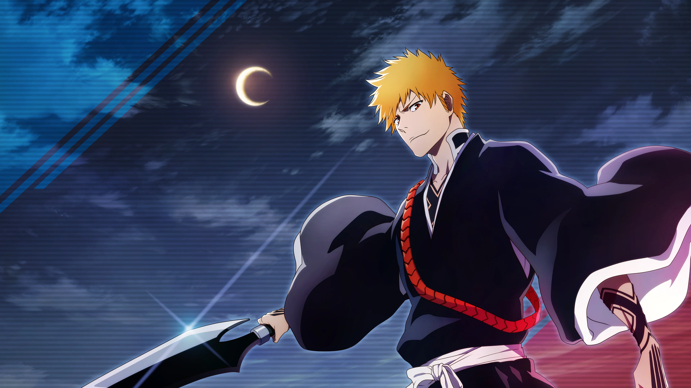

Bleach
Temp. 1ª - Temp. 16ª
2004 - 2012
Enredo
As animações foram baseadas na série de mangás escritos e ilustrados por Tite Kubo, publicados no Brasil pela editora Panini.
Bleach segue a história de Ichigo Kurosaki, um adolescente que têm a habilidade de ver espíritos. Após um encontro com uma Shinigami (deus da morte) chamada Rukia Kuchiki, ele acaba assumindo o papel dela, defendendo os vivos de espíritos malignos chamados Hollows e ajudando as almas a encontrarem a paz. Ao longo da série, Ichigo e seus amigos enfrentam diversas ameaças e revelam segredos sobre o mundo espiritual, enquanto buscam entender suas próprias habilidades e destinos. A trama mistura ação, aventura e elementos sobrenaturais, explorando temas de amizade e dever.
Autor:
Tite Kubo
Onde assistir:
Bleach TYBW
Título original: BLEACH: Thousand-Year Blood War
2022 | 2 Temporadas

Enredo
"Bleach: Thousand-Year Blood War" é a continuação da história de "Bleach", centrando-se em uma guerra entre os Shinigamis e uma poderosa organização chamada Quincy, que busca exterminar todos os Hollows sem purificalos. A trama se aprofunda nos conflitos entre Ichigo e seus amigos contra os novos inimigos, revelando segredos sobre o passado dos Quincy e suas conexões com os Shinigamis. A série explora temas de sacrifício, lealdade e a luta entre o bem e o mal, enquanto intensifica a ação e os desafios enfrentados pelos personagens. As batalhas são mais épicas e emocionais, trazendo um desfecho grandioso para a saga.
Autor:
Tite Kubo